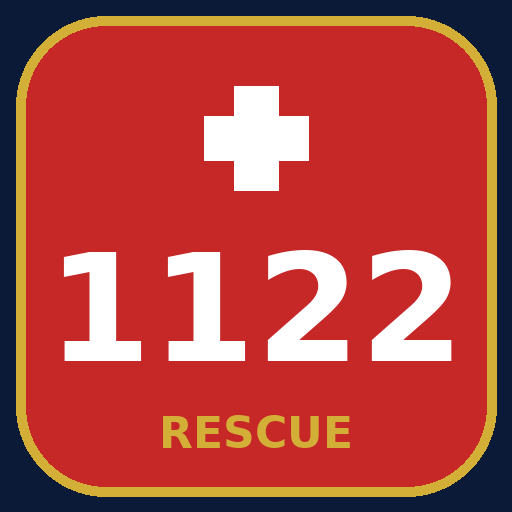

Punjab emergency guide — fire, ambulance & rescue. One tap to call Rescue 1122, plus Police 15, Fire Brigade 16, Edhi Ambulance 115 and other emergency numbers. Works fully offline.
Tap-to-call emergency numbers • When-to-call & what-to-say guides • Official Rescue Punjab website
⬇ Download APK (v1.0)This is an information guide by Jilan Apps Official. It is not affiliated with Rescue 1122 or any government body. In a real emergency, call 1122 immediately — do not wait.
Need help? WhatsApp: +92 305 7867149